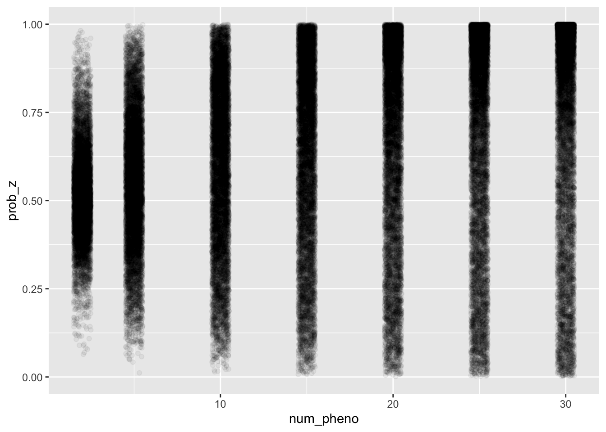

\[ \newcommand{\E}{\text{E}} \newcommand{\diag}{\text{diag}} \]
library(dplyr)
library(ggplot2)As tested on real data, the imputation scheme proposed here do not get good-quality imputation on real data. As the second try, I propose the following imputation scheme which do not rely on pre-compuated PRS/GWAS results. Instead, it fits a PRS on-the-fly.
In the following, I first sketch the model and then spread out the corresponding EM algorithm.
Still, the focus is \(y^f, y^m | Z\) where \(Z\) is indicator for event that haplotype 1 is from father. Previously, we use \(g^1\) and \(g^2\) to present the different contributions of the two haplotypes. Here we work with \(H^1\) and \(H^2\) directly. Specifically, the model is as follow.
\[\begin{aligned} y^f | H^1, H^2, Z &\sim N(~[ Z H^1 + (1 - Z) H^2 ]~\beta_f~, \sigma_f^2) \\ y^m | H^1, H^2, Z &\sim N(~[ (1 - Z) H^1 + Z H^2 ]~\beta_m~, \sigma_f^2) \end{aligned}\]
Notice that I used sex-specific model so that \(\beta\) and \(\sigma^2\) are sex-specific.
\[\begin{aligned} \log \Pr(y^f, y^m, Z | H^1, H^2; \beta, \sigma^2 ) &= constant \\ &+ \frac{n}{2} \log \sigma_f^2 + \frac{n}{2} \log \sigma_m^2 \\ &- \frac{1}{2 \sigma_f^2} (y^f - H_Z \beta_f)' (y^f - H_Z \beta_f) \\ &- \frac{1}{2 \sigma_m^2} (y^m - H_{-Z} \beta_m)'(y^m - H_{-Z} \beta_m) \end{aligned}\] , where \(H_Z := Z H^1 + (1 - Z) H^2\) and \(H_{-Z} := (1 - Z) H^1 + Z H^2\).
\[\begin{aligned} \E_{Z | y, H, \theta^{(t)}}[\log \Pr(y, Z | H; \theta)] &= constant \\ &~~+ \frac{n}{2} \log \sigma_f^2 + \frac{1}{\sigma_f^2} \E[ (y^f)' H_Z \beta_f ] - \frac{1}{2 \sigma_f^2} \E[ \beta_f' H_Z' H_Z \beta_f] \\ &~~+ \cdots \text{counterpart in mother} \\ &= \frac{n}{2} \log \sigma_f^2 + \frac{1}{\sigma_f^2} (y^f)' [\E(Z) H^1 + (1 - \E(Z)) H^2] \beta_f \\ &~~- \frac{1}{2 \sigma_f^2} \beta_f' \E[ (H^1)' Z^2 H^1 + 2 (H^1)' Z(1-Z) H^2 + (H^2)'(1 - Z)^2H^2 ]\beta_f \\ &~~+ \cdots \\ &~~~~\text{, since $Z^2 = Z$, $(1 - Z)^2 = (1 - Z)$, and $Z(1 - Z) = 0$} \\ &~~~~\text{, and let $\E_{Z|y, H, \theta^{(t)}}(Z) = \gamma$, a diagonal matrix} \\ &= \frac{n}{2} \log \sigma_f^2 + \frac{1}{\sigma_f^2} (y^f)' [\gamma H^1 + (1 - \gamma) H^2] \beta_f \\ &~~- \frac{1}{2 \sigma_f^2} \beta_f' [ (H^1)' \gamma H^1 + (H^2)'(1 - \gamma) H^2 ]\beta_f \\ &~~+ \cdots \end{aligned}\]
For father, let \(M = \gamma H^1 + (1 - \gamma) H^2\) and \(N = (H^1)' \gamma H^1 + (H^2)'(1 - \gamma) H^2\).
\[\begin{aligned} \beta^f, \sigma_f^2 &= \arg\max_{\beta, \sigma^2} -\frac{n}{2} \log \sigma^2 + \frac{1}{\sigma^2} (y^f)' M \beta - \frac{1}{2\sigma^2} \beta' N \beta - \frac{(y^f)' y^f}{2\sigma^2}\\ \beta^f &= N^{-1} M' y^f \\ \sigma_f^2 &= \frac{1}{n} \diag[~ (y^f)' y^f - (\beta^f)' N \beta^f ~] ~~ \text{, given $\beta^f$ is achieved optimum} \end{aligned}\]
For the counterpart in mother, let \(\widetilde{M} = (1 - \gamma) H^1 + \gamma H^2 = H^1 + H^2 - M\) and \(\widetilde{N} = (H^1)' (1 - \gamma) H^1 + (H^2)'\gamma H^2 = (H^1)'H^1 + (H^2)'H^2 - N\).
\[\begin{aligned} \beta^m &= \widetilde{N}^{-1} \widetilde{M}' y^f \\ \sigma_m^2 &= \frac{1}{n} \diag[~ (y^m)' y^m - (\beta^m)' \widetilde{N} \beta^m ~] ~~ \text{, given $\beta^m$ is achieved optimum} \end{aligned}\]
\[\begin{aligned} \Pr(Z = z | y^f, y^m, H^1, H^2; \theta) &= \frac{\Pr(y^f, y^m| Z = z, H^1, H^2; \theta)\Pr(Z = z)}{\sum_{z' \in \{0, 1\}} \Pr(y^f, y^m| Z = z', H^1, H^2; \theta)\Pr(Z = z')} \\ \Pr(y^f, y^m| Z = z, H^1, H^2; \theta) &= \prod_p [~ \Pr(y^{f, p} | Z = z, H^1, H^2; \theta^{f, p}) \times \Pr(y^{m, p} | Z = z, H^1, H^2; \theta^{m, p}) ~] \end{aligned}\]
We’d better work in log-scale.
\[\begin{aligned} l_i(z) &= \sum_p \sum_{f, m} \log(y | Z = z, H, \theta^{(t)}) \\ \gamma_i &= \begin{cases} \frac{1}{1 + e^{r_i}} & l_i(1) > l_i(0), r_i = l_i(0) - l_i(1) < 0 \\ \frac{e^{r_i}}{1 + e^{r_i}} & l_i(1) \le l_i(0), r_i = l_i(1) - l_i(0) < 0 \end{cases} \end{aligned}\].
Let
\[\begin{aligned} M &= \diag(\gamma_i) H^1 + (I - \diag(\gamma_i)) H^2 \\ N &= (H^1)' \diag(\gamma_i) H^1 + (H^2)' (I - \diag(\gamma_i)) H^2 \\ \widetilde{M} &= H^1 + H^2 - M \\ \widetilde{N} &= (H^1)'H^1 + (H^2)'H^2 - N \end{aligned}\].
And update \(\theta\) as
\[\begin{aligned} \theta^{(t+1)}: & \\ \beta^f &= N^{-1} M' y^f \\ \sigma_f^2 &= \frac{1}{n} \diag[~ (y^f)' y^f - (\beta^f)' N \beta^f ~] \\ \beta^f &= \widetilde{N}^{-1} \widetilde{M}' y^m \\ \sigma_m^2 &= \frac{1}{n} \diag[~ (y^m)' y^m - (\beta^m)' \widetilde{N} \beta^m ~] \end{aligned}\].
source('../code/rlib_em_otf.R')Now I simulate some data to test the EM implementation.
Mostly reuse the scheme in init_idea_outline. It contains the following steps:
Some parameter settings:
sample_size = 10000
n_pheno = 30
prior_causal = 0.4
causal_sigma = 1
n_snp = 10
heritabiltiy = 0.01
maf_low = 0.05
maf_high = 0.45Simulation.
source('../code/rlib_simulation.R')maf = get_maf(n_snp, maf_low, maf_high)
h_father = sim_hap(sample_size, n_snp, maf)
h_mother = sim_hap(sample_size, n_snp, maf)
h_child = transmit_haplo(h_father, h_mother)
effect_size = matrix(spike_and_slab(n_snp * n_pheno, 1 - prior_causal, causal_sigma), nrow = n_snp, ncol = n_pheno)
y_father = simulate_pheno(h_father, effect_size, heritabiltiy, maf)
y_mother = simulate_pheno(h_mother, effect_size, heritabiltiy, maf)h1 = h_child[[1]]
h2 = h_child[[2]]
df_z = list()
for(np in c(2, 5, 10, 15, 20, 25, 30)) {
message('Working on num_pheno = ', np)
o = em_algorithm_otf(y_father[, 1 : np], y_mother[, 1 : np], h1, h2, maxiter = 50)
df_z[[length(df_z) + 1]] = data.frame(prob_z = o$gamma, num_pheno = np)
}## Working on num_pheno = 2## Working on num_pheno = 5## Working on num_pheno = 10## Working on num_pheno = 15## Working on num_pheno = 20## Working on num_pheno = 25## Working on num_pheno = 30df_z = do.call(rbind, df_z)df_z %>% ggplot() + geom_jitter(aes(x = num_pheno, y = prob_z), height = 0, width = 0.5, alpha = 0.05)
df_z %>% group_by(num_pheno) %>% summarize(S_bar = mean(prob_z ^ 2 + (1 - prob_z) ^ 2), gamma_bar = mean(prob_z)) %>% mutate(power_ratio = gamma_bar / sqrt(S_bar))## # A tibble: 7 x 4
## num_pheno S_bar gamma_bar power_ratio
## <dbl> <dbl> <dbl> <dbl>
## 1 2 0.506 0.505 0.710
## 2 5 0.516 0.512 0.712
## 3 10 0.534 0.524 0.717
## 4 15 0.545 0.534 0.724
## 5 20 0.557 0.544 0.729
## 6 25 0.571 0.556 0.736
## 7 30 0.582 0.566 0.742